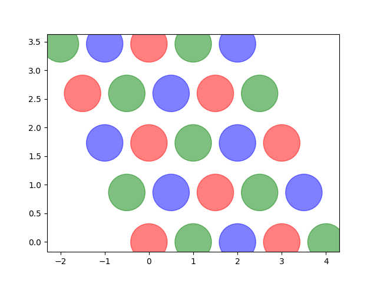
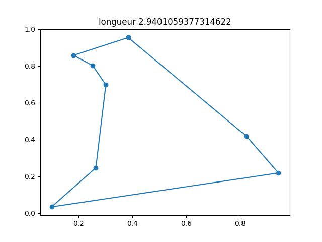
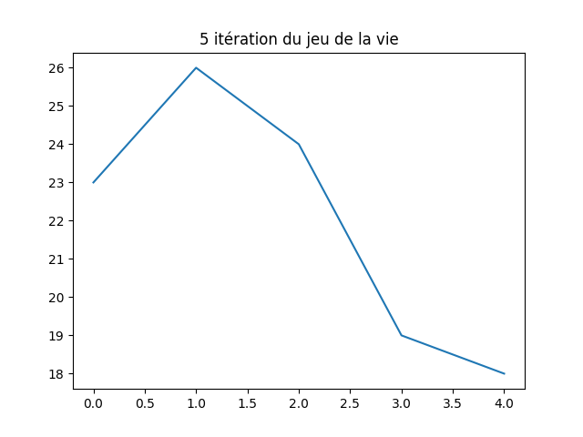

2024-11-31 : rappel feuille de route 2024¶
Le plan des séances est changé après que celles-ci ont eu lieu.
Séance 1¶
Séance 2¶
Tests unitaires et classes toujours avec les dames
Séance 3¶
classes pour représenter un graphe
Fin des classes puis les itérateurs et numpy broadcast.
Séance 4¶
Nous garderons les dames et l’algorithme minimax pour une autre fois peut être.
Cette séance à propos de la programmation dynamique.
Le premier exercice consiste à déterminer le nombre minimal de pièces
de monnaie pour écrire un montant et de retrouver la séquence minimale
de pièces. On considère les pièces [1, 2, 4, 5].
<<<
def ecriture_minimale(n):
pieces = [1, 2, 4, 5]
min_pieces = [None for i in range(n + 1)]
predecessor = [None for i in range(n + 1)]
min_pieces[0] = 1
for p in pieces:
min_pieces[p] = 1
predecessor[p] = p
for i in range(n + 1):
if min_pieces[i] is None:
# écriture impossible
continue
for p in pieces:
if i + p > n:
break
m = min_pieces[i] + 1
if min_pieces[i + p] is None or m < min_pieces[i + p]:
min_pieces[i + p] = m
predecessor[i + p] = p
composition = []
while n > 0:
composition.append(predecessor[n])
n -= predecessor[n]
return min_pieces[n], composition
print(ecriture_minimale(99))
>>>
(1, [5, 5, 5, 5, 5, 5, 5, 5, 5, 5, 5, 5, 5, 5, 5, 5, 5, 5, 5, 4])
On bascule ensuite vers la Distance d’édition.
A propos de la distance d’édition, voir aussi Distance d’édition ou encore Distance entre deux mots de même longueur et tests unitaires.
Séance 5¶
Séance 6¶
Evocation de la Recherche à base de préfixes en terme algorithmique.
Autres variations autour du problème du voyageur de commerce, ou TSP pour Travelling Salesman Problem ou encore circuit hamiltonien: Circuit hamiltonien et Kohonen, Circuit hamiltonien et Kruskal. Quelques bouts de code écrit durant la séance. Tout d’abord les expressions régulières.
<<<
import re
reg = re.compile("(-?[1-9][ 0-9]{0,16}([.,][0-9]{0,4})? *(€|(euros))?)")
text = "Le montant de 3000 euros auquel on a ôté 5,4 euros."
print(reg.findall(text))
reg = re.compile("([0-9]{1,2}[-/][0-9]{1,2}[-/][0-9]{2,4})")
text = "9/10/2024 09-10-24"
print(reg.findall(text))
>>>
[('3000 euros', '', 'euros', 'euros'), ('5,4 euros', ',4', 'euros', 'euros')]
['9/10/2024', '09-10-24']
Ensuite la pyramide.
<<<
import math
import os
import matplotlib.pyplot as plt
fig, ax = plt.subplots(1, 1)
x, y, colors = [], [], []
cs = ["r", "b", "g"]
for i in range(0, 5):
for j in range(0, 5):
x.append(i - j * 0.5)
y.append(j * math.sqrt(3) / 2)
colors.append(cs[(2 * i - j) % 3])
size = [2000 for c in x]
ax.scatter(x, y, s=size, c=colors, alpha=0.5)
fig.savefig(os.path.join(__WD__, "pyramide.png"))
text = ".. image:: pyramide.png"
print(text)
>>>
Ensuite le voyageur de commerce.
<<<
import itertools
import numpy as np
import matplotlib.pyplot as plt
def show(villes):
fig, ax = plt.subplots(1, 1)
x = villes[:, 0].tolist() + [villes[0, 0]]
y = villes[:, 1].tolist() + [villes[0, 1]]
ax.plot(x, y, "o-")
ax.set_title(f"longueur {distance(villes)}")
return fig, ax
def distance(villes):
# distance sans boucle
dall = villes[1:, :] - villes[:-1, :]
d = (dall[:, 0] ** 2 + dall[:, 1] ** 2) ** 0.5
dlast = villes[0, :] - villes[-1, :]
d1 = (dlast[0] ** 2 + dlast[1] ** 2) ** 0.5
return d.sum() + d1
def solution_permutations(villes):
bestp = list(range(villes.shape[0]))
bestd = distance(villes)
for p in itertools.permutations(list(range(villes.shape[0]))):
v2 = villes[list(p), :]
d2 = distance(v2)
if d2 < bestd:
bestd = d2
bestp = list(p)
return villes[bestp, :]
def solution_croisement(villes):
bestd = distance(villes)
bestv = villes
for i in range(0, villes.shape[0]):
for j in range(i + 2, villes.shape[0]):
p = list(range(villes.shape[0]))
if i > 0:
p[i:j] = p[j - 1 : i - 1 : -1]
else:
p[i:j] = p[j - 1 :: -1]
v2 = bestv[p, :]
d2 = distance(v2)
if d2 < bestd:
bestd = d2
bestv = v2
return bestv
villes = np.random.rand(8, 2)
print("distance initiale", distance(villes))
# solution naive
print("-- optimisation gourmande...")
optim = solution_permutations(villes)
print("-- optimisation gourmande:", distance(optim))
print()
print("-- optimisation plus rapide mais approchée...")
optim = solution_croisement(villes)
print("-- optimisation plus rapide mais approchée", distance(optim))
# graph
fig, ax = show(optim)
fig.savefig(os.path.join(__WD__, "tsp_simple.png"))
text = ".. image:: tsp_simple.png"
print("\n\n")
print(text)
>>>
distance initiale 5.35832572314205 – optimisation gourmande… – optimisation gourmande: 2.9401059377314622
– optimisation plus rapide mais approchée… – optimisation plus rapide mais approchée 2.9401059377314622
Séance 7¶
Bouts de code, un peu d’optimization.
<<<
import numpy as np
def calcul(h1, h2, v1, v2, x):
t1 = np.sqrt(x**2 + h1**2) / v1
t2 = np.sqrt((1 - x) ** 2 + h2**2) / v2
return t1 + t2
h1, h2, v1, v2 = 1, 0.5, 1, 0.8
p = np.arange(6) / 5
print(p)
print(calcul(1, 1, 1, 1, p))
print(calcul(h1, h2, v1, v2, p))
def calcul_entrepot(v1, v2, A, B, Es):
# A: [[0, 0]], B: [[1, 1]], Es: [[0.3, 0.4], [...]]
t1 = np.sqrt(((A - Es) ** 2).sum(axis=1)) / v1
t2 = np.sqrt(((B - Es) ** 2).sum(axis=1)) / v2
return t1 + t2
A = np.array([[0, 0]])
B = np.array([[1, 1]])
Es = np.array([[0.5, 0.5], [0.1, 0.1], [0, 0.1]])
print("---------")
print(calcul_entrepot(v1, v2, A, B, Es))
>>>
[0. 0.2 0.4 0.6 0.8 1. ]
[2.414 2.3 2.243 2.243 2.3 2.414]
[2.398 2.199 2.053 1.967 1.954 2.039]
---------
[1.591 1.732 1.782]
Jeu de la vie:
<<<
import os
import numpy as np
import matplotlib.pyplot as plt
import tqdm
def plateau(n, p=0.5):
return (np.random.rand(n, n) < p).astype(int)
def dessin(plat, next_plat):
fig, ax = plt.subplots(1, 2)
ax[0].imshow(plat.astype(float))
ax[0].get_xaxis().set_visible(False)
ax[0].get_yaxis().set_visible(False)
ax[1].imshow(next_plat.astype(float))
ax[1].get_xaxis().set_visible(False)
ax[1].get_yaxis().set_visible(False)
return fig, ax
def iteration(plat):
voisin = np.zeros(plat.shape, dtype=int)
i, j = plat.shape
# voisin gauche, droite
voisin[:-1, :] += plat[1:, :]
voisin[1:, :] += plat[:-1, :]
# voisin haut,bas
voisin[:, :-1] += plat[:, 1:]
voisin[:, 1:] += plat[:, :-1]
# voisin diagonal
voisin[:-1, :-1] += plat[1:, 1:]
voisin[1:, 1:] += plat[:-1, :-1]
# voisin autre diagonal
voisin[:-1, 1:] += plat[1:, :-1]
voisin[1:, :-1] += plat[-1:, 1:]
# mise à jour
nouveau = np.zeros(plat.shape, dtype=int)
nouveau += ((plat == 1) & (voisin <= 3) & (voisin >= 2)).astype(int)
nouveau += ((plat == 0) & (voisin == 3)).astype(int)
return nouveau
def jeu(n, p, n_iter=5, save_intermediate=False):
plat = plateau(10, 0.2)
x, y = [], []
for i in tqdm.tqdm(list(range(n_iter))):
x.append(i)
y.append(plat.sum())
next_plat = iteration(plat)
if save_intermediate:
fig, ax = dessin(plat, next_plat)
fig.savefig(os.path.join(__WD__, "anim_vie{i:03d}.png"))
plat = next_plat
fig, ax = plt.subplots(1, 1)
ax.plot(x, y)
ax.set_title(f"{n_iter} itération du jeu de la vie")
fig.savefig(os.path.join(__WD__, "anim_evolution.png"))
return plat
plat = plateau(20, 0.4)
next_plat = iteration(plat)
print("première itération")
print(next_plat)
fig, ax = dessin(plat, next_plat)
ax[0].set_title("avant")
ax[1].set_title("première itération")
fig.savefig(os.path.join(__WD__, "vie_1.png"))
print("et le jeu")
plat = jeu(16, 0.2)
print(plat)
>>>
première itération
[[0 1 1 1 1 1 0 0 0 0 0 0 1 0 0 1 1 0 0 0]
[1 0 0 0 1 0 0 0 0 0 1 1 0 1 0 0 0 0 0 0]
[1 0 1 1 0 0 0 0 0 0 0 1 0 1 1 1 0 0 1 0]
[1 1 0 1 0 0 1 0 0 0 0 1 0 1 0 1 1 0 0 0]
[0 0 0 1 0 0 0 1 1 0 0 0 0 0 1 0 1 0 0 0]
[0 0 1 0 0 0 0 0 0 0 1 1 1 0 0 0 0 0 0 1]
[0 0 0 0 0 0 0 0 1 0 1 0 0 1 1 1 0 0 1 1]
[0 1 0 0 0 0 0 0 0 0 0 1 1 0 1 1 0 1 1 0]
[0 0 1 0 0 0 1 0 0 0 0 1 0 0 0 1 1 1 1 0]
[0 1 0 0 0 0 0 0 0 0 0 0 1 1 1 1 0 0 1 0]
[0 1 0 1 0 0 1 1 1 0 1 0 1 0 0 1 0 1 1 1]
[0 1 1 0 0 0 0 1 0 0 0 1 1 0 0 0 0 1 1 0]
[1 0 1 0 0 0 0 1 0 1 1 0 0 1 0 0 0 1 0 0]
[1 1 0 0 0 0 0 0 0 0 0 0 0 1 0 0 1 0 0 0]
[1 0 1 0 1 1 1 0 0 0 0 0 1 0 1 0 1 0 1 1]
[1 0 0 1 0 1 1 0 0 0 0 0 0 0 1 0 0 0 1 0]
[1 0 0 0 0 1 0 0 1 0 0 1 0 1 0 0 1 0 1 0]
[1 1 1 0 1 1 0 0 1 0 0 0 0 0 0 0 0 0 0 0]
[0 0 1 0 0 0 1 0 1 0 0 0 0 0 1 0 0 0 1 0]
[0 0 0 0 1 1 0 0 0 1 0 1 0 0 0 1 0 0 1 0]]
et le jeu
0%| | 0/5 [00:00<?, ?it/s]
100%|##########| 5/5 [00:00<00:00, 18961.59it/s]
[[0 0 1 1 1 1 0 0 0 0]
[0 0 0 1 1 0 1 0 0 0]
[0 0 0 0 0 0 1 0 0 0]
[0 0 0 0 0 1 1 0 0 0]
[0 0 0 0 0 1 1 0 0 0]
[0 0 0 0 1 0 1 0 0 0]
[0 0 0 0 1 1 1 0 0 0]
[0 0 0 0 1 0 1 0 0 0]
[0 0 0 0 1 1 0 0 0 0]
[0 0 0 0 0 0 0 0 0 0]]
Et visuellement, la première itération :

Et l’évolution du jeu :
Séance 8¶
Pivot de Gauss, cet algorithme est la première étage pour inverser une matrice
TD noté 1h30 en seconde partie. Classes et un algorithme. Enoncés des années précédentes : Séances minutées.
Idées laissées de côté mais autant d’exercices possibles¶
Convertir une expression mathématique comme  en notation polonaise inverse.
Voir aussi Algorithme Shunting-yard.
en notation polonaise inverse.
Voir aussi Algorithme Shunting-yard.